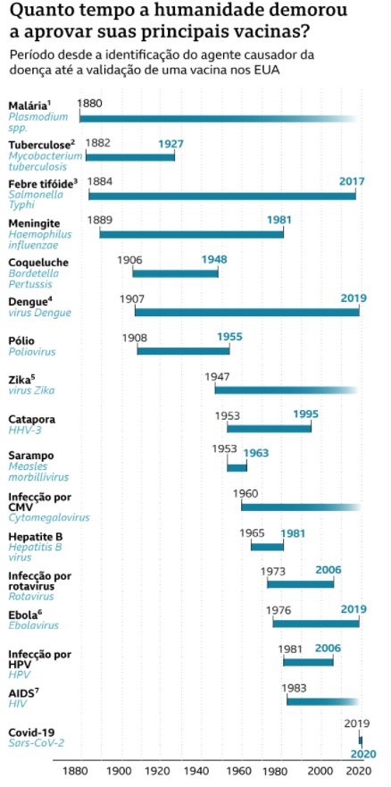

Coronavírus gráfico mostra tempo que humanidade levou para criar vacinas e recorde para covid-19
Um artigo de pesquisadores do projeto Our World in Data, da Universidade de Oxford, no Reino Unido, comparou o tempo entre a identificação do agente causador de 16 doenças e o ano em que uma vacina contra eles foi aprovada nos EUA.
Os EUA foram escolhidos como referência porque é o país onde a maioria das imunizações é licenciada pela primeira vez, mesmo que não tenham sido criadas lá.
O gráfico reúne as principais doenças para as quais a vacinação é recomendada e que têm alta mortalidade, segundo a Organização Mundial da Saúde (OMS) — além da covid-19, que já deixou mais de 1,5 milhão de mortos em todo o mundo desde o fim do ano passado.
E conta também com algumas enfermidades que ainda não têm vacinas licenciadas, mas já têm candidatas em teste em alguns países do mundo.
A comparação mostra como o processo pelo qual vacinas são criadas pode ser demorado, e como a pandemia atual foi uma exceção a esse paradigma.
Fonte: BBC
Brasil se aproxima de 180 mil mortos por Covid-19
O consórcio de veículos de imprensa divulgou novo levantamento da situação da pandemia de coronavírus no Brasil a partir de dados das secretarias estaduais de Saúde, consolidados às 20h desta quinta-feira (10).
O país registrou 769 mortes pela Covid-19 nas últimas 24 horas, chegando ao total de 179.801 óbitos desde o começo da pandemia. Com isso, a média móvel de mortes no Brasil nos últimos 7 dias foi de 642. A variação foi de +35% em comparação à média de 14 dias atrás, indicando tendência de alta nos óbitos pela doença.
Em casos confirmados, desde o começo da pandemia 6.783.543 brasileiros já tiveram ou têm o novo coronavírus, com 53.425 desses confirmados no último dia. A média móvel nos últimos 7 dias foi de 42.290 novos diagnósticos por dia. Isso representa uma variação de +34% em relação aos casos registrados em duas semanas, o que indica tendência de alta também nos diagnósticos.
Vinte e um estados e o Distrito Federal apresentaram alta na média móvel de mortes: PR, RS, SC, ES, MG, RJ, SP, DF, GO, MS, MT, AC, RO, RR, TO, BA, CE, PB, PE, PI, RN e SE. É o segundo dia seguido em que tantos estados aparecem simultaneamente com tendência de alta nas mortes pela doença desde que o consórcio começou a acompanhar essas tendências, em 9 de julho. Antes disso, o máximo de estados em alta ao mesmo tempo havia sido de 18.
Fonte: G1
RT-PCR ou sorológico? Entenda as diferenças entre os testes para a covid-19
Considerado o “padrão ouro” ou “padrão de referência”, o RT-PCR é o exame que identifica o vírus e confirma a covid-19. Para isso, o teste busca detectar o RNA do vírus através da amplificação do ácido nucleico pela reação em cadeia da polimerase.
De acordo com a professora Glaucia, esse teste deve ser realizado no início da doença, especialmente na primeira semana, quando o indivíduo possui grande quantidade do vírus Sars-CoV-2.
As amostras são coletadas através de swabs (cotonetes) de nasofaringe (nariz) e orofaringe (garganta). A abordagem do exame, no momento, é do profissional de saúde que está atendendo o paciente no hospital, ambulatório ou consultório. Isso porque é preciso saber a fase da doença para a coleta da amostra.
Enquanto o RT-PCR deve ser realizado no início da doença, os testes sorológicos são feitos a partir da segunda semana, quando a quantidade de vírus diminui progressivamente e o indivíduo produz anticorpos contra o vírus, principalmente das classes IgG e IgM.
A professora Glaucia explica que os anticorpos da classe IgM são mais precoces, e podem ser detectados a partir da 2ª semana de infecção. “Já os da classe IgG aparecem mais tardiamente, geralmente após 14 dias da infecção, e persistem por mais tempo”, diferencia.
Os testes de sorologia tradicional para identificar os anticorpos são obtidos nas amostras de soro após punção venosa, realizada em laboratório. Também podem ser obtidos em testes rápidos (imunocromatográficos), realizados em sangue capilar obtido por punção digital.
Fonte: Faculdade de Medicina UFMG
RN tem 1º caso confirmado de reinfecção por coronavírus do Brasil
Fonte: UOL
Pessoas de 20 a 40 anos estão impulsionando pandemia, diz OMS
Fonte: Agência Brasil
Status Coronavirus no mundo em tempo real